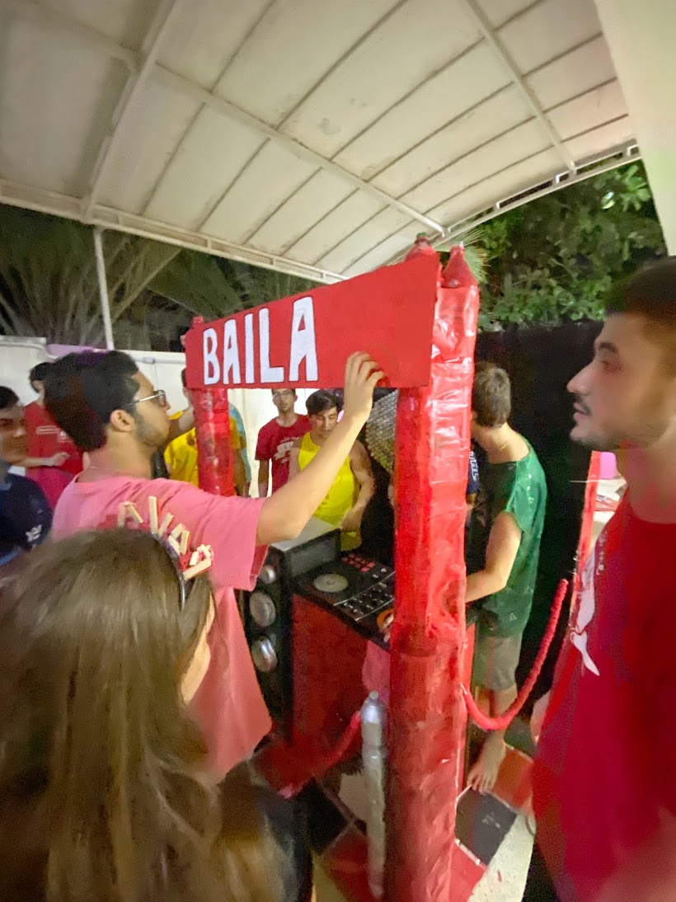

Descubra minha criatividade em ação!
Adiquiri desde habilidades tecnicas até soft skilss, mexer no notion, fazer fluxo de caixa, como lidar com crianças, como lidar com patrocinio
Desenvolvi habilidades de gestão com Notion
Durante o processo de organização, é fundamental executar diversas tarefas dentro do prazo, o que torna indispensável o uso de ferramentas como o Kanban. A ferramenta com a qual desenvolvi maior conhecimento nesse contexto foi o Notion. Ela me ajudou a gerenciar demandas de maneira eficiente, priorizar atividades, organizar o orçamento e identificar as questões mais urgentes para serem discutidas em atas de reuniões.
Ser sustentável na produção de arte
Outro tópico em desenvolvimento foi a produção artística sustentável, na qual utilizamos exclusivamente materiais recicláveis ou resgatados por meio de coleta seletiva residencial e postos de coleta. Nosso objetivo era transformar materiais simples, como papelão, garrafas PET, aparelhos antigos e recipientes de limpeza, em algo novo e útil. Um exemplo foi o stand da equipe, criado para o ponto de arrecadação de doações. Esse espaço não apenas viabilizou a expansão do projeto, como também acolheu novos integrantes, fortalecendo a iniciativa.
Doação e Ação Social
Realizamos uma arrecadação que resultou em mais de 100 kg de alimentos não perecíveis, além de 120 livros didáticos, materiais de higiene e itens escolares. Durante a ação, buscamos conscientizar as crianças sobre a importância de compartilhar e ajudar quem mais precisa. Mostramos a elas a realidade de muitas pessoas em situação de vulnerabilidade e como pequenas ações podem gerar um impacto significativo na vida de outros. Ainda, fizemos doação de móveis como berços e cômodas para creches de Salvador. Conseguimos levar alguns dos adolescentes para nos ajudar na ação, a fim de aflorarmos a humanidade em nós quando contribuimos para o bem social. Sempre muito gratificante ser um cidadão que contribui à sua comunidade!